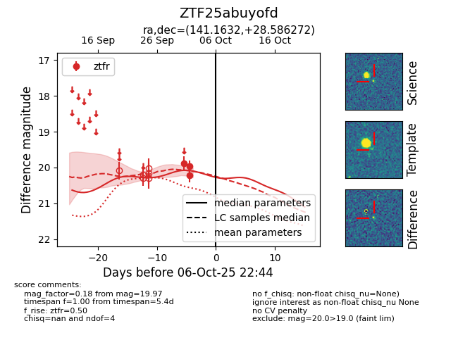
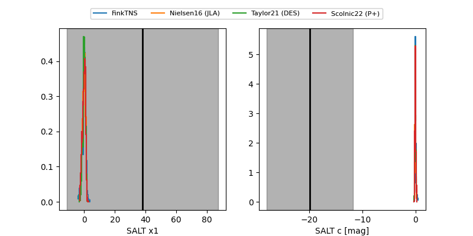

FINK: ZTF25abuyofd
Lasair: ZTF25abuyofd
ALeRCE: ZTF25abuyofd
ZTF25abuyofd (ztf,fink)
equatorial (ra, dec) = (141.1632,+28.58627)
galactic (l, b) = (198.4743,+44.63396)


last ztfr=19.97
3 ztfr detections